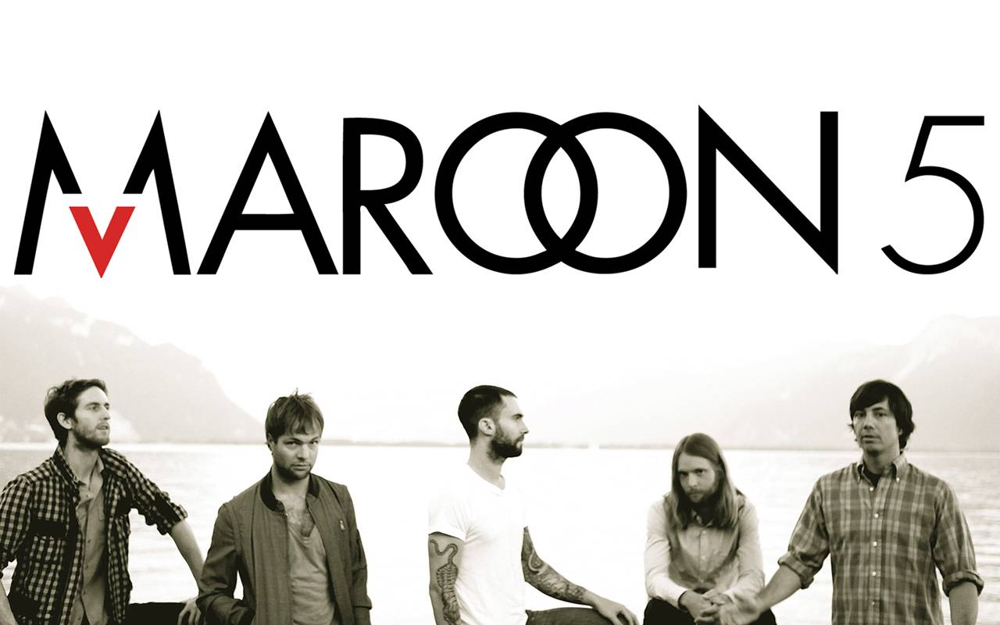

Vietnamese-German University
Foundation Year
English for Computer Science
|
| ||||||
|
|
|
|
|
|  |
|
Maroon 5, born and bred in Los Angeles, with their catchy hook, soaring vocals, and signature sound, have solidified their position as one of pop music’s most enduring artists. The band captured their first of three Grammy Awards as “Best New Artist” of 2005 and have gone on to sell more than 17 million albums worldwide. Maroon 5’s releases have also gone gold and platinum in over 35 countries. Maroon 5 won over fans and critics alike with the hybrid rock/R&B sound they introduced on their debut album, Songs About Jane and their double platinum album, It Won't be Soon Before Long, which included hits like "Makes Me Wonder" and "If I Never See your Face Again." In 2010, the band released their third studio album, Hands All Over, which featured the hit singles “Misery” and the anthemic “Moves Like Jagger,” which climbed to the #1 spot on the Top 40 and Hot AC charts, as well as claiming the #1 spot on the Billboard Hot 100. Both singles received GRAMMY Award nominations in the category of "Best Pop Performance By A Duo Or Group With Vocals.” “Moves Like Jagger” was also one of the best selling singles of 2011 with sales of 8.5 million copies worldwide, and has become one of the best-selling singles of all time. With the success of the track on the Hot 100 chart, Maroon 5 frontman Adam Levine also notably became the first artist in the chart's 53-year history to reach #1 as part of a group, while entering the Top 10 at the same time as a soloist, as he was featured on and co-wrote Gym Class Heroes’ top single, “Stereo Hearts." In 2012, Maroon 5 released Overexposed, which quickly reinforced the group’s status as a powerhouse in popular music with all of the collection’s singles rising to the top of the charts. The third single off of the album, “Daylight,” claimed the # 1 spot on both Top 40 and Hot AC radio charts. In the process, the band set a record for the most #1’s (six in total) by a group in the Top 40 chart’s 20-year history. In support of the album, Maroon 5 wrapped one of the year’s highest grossing tours, with over 50 million dollars in ticket sales. Maroon 5’s latest album V debuted at #1 on Billboard’s Top 200 and is a sonic summation of the group’s journey to date – capturing the essence of the earliest Maroon 5 hits through to their most recent successes, as well as providing a picture of its artistic growth in the future. The album’s debut single “Maps,” set a record for the highest debut by a group on TOP 40 radio charts in 18 years and has earned a top 100 spot in 18 countries. In support of V, the band will embark on The Maroon 5 World Tour 2015, taking them to 37 cities worldwide. [1] |
References[1]Maroon 5. Retrieved 2 Dec 2016 from http://www.maroon5.com/about[pic]Maroon 5's logo. Retrieved 2 Dec 2016 from http://www.maroon5.com/ [pic2]Maroon 5's photo uploaded by Rajath. Retrieved 2 Dec 2016 from http://stuffpoint.com/maroon5/image/294357/maroon-5-12-wallpaper/ |
| Created by: Lâm Hải Sơn Class: A1 |
Back to top |